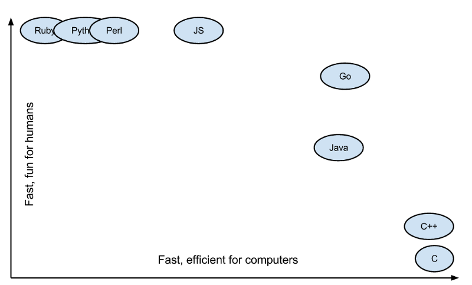

- 000 开篇词 洞悉技术的本质，享受科技的乐趣.md.html
- 001 程序员如何用技术变现（上）.md.html
- 002 程序员如何用技术变现（下）.md.html
- 003 Equifax信息泄露始末.md.html
- 004 从Equifax信息泄露看数据安全.md.html
- 005 何为技术领导力.md.html
- 006 如何拥有技术领导力.md.html
- 007 推荐阅读：每个程序员都该知道的事.md.html
- 008 Go语言，Docker和新技术.md.html
- 009 答疑解惑：渴望、热情和选择.md.html
- 010 如何成为一个大家愿意追随的Leader？.md.html
- 011 程序中的错误处理：错误返回码和异常捕捉.md.html
- 012 程序中的错误处理：异步编程和最佳实践.md.html
- 013 魔数 0x5f3759df.md.html
- 014 推荐阅读：机器学习101.md.html
- 015 时间管理：同扭曲时间的事儿抗争.md.html
- 016 时间管理：投资赚取时间.md.html
- 017 故障处理最佳实践：应对故障.md.html
- 018 故障处理最佳实践：故障改进.md.html
- 019 答疑解惑：我们应该能够识别的表象和本质.md.html
- 020 分布式系统架构的冰与火.md.html
- 021 从亚马逊的实践，谈分布式系统的难点.md.html
- 022 分布式系统的技术栈.md.html
- 023 分布式系统关键技术：全栈监控.md.html
- 024 分布式系统关键技术：服务调度.md.html
- 025 分布式系统关键技术：流量与数据调度.md.html
- 026 洞悉PaaS平台的本质.md.html
- 027 推荐阅读：分布式系统架构经典资料.md.html
- 028 编程范式游记（1）- 起源.md.html
- 029 编程范式游记（2）- 泛型编程.md.html
- 030 编程范式游记（3） - 类型系统和泛型的本质.md.html
- 031 Git协同工作流，你该怎样选.md.html
- 032 推荐阅读：分布式数据调度相关论文.md.html
- 033 编程范式游记（4）- 函数式编程.md.html
- 034 编程范式游记（5）- 修饰器模式.md.html
- 035 编程范式游记（6）- 面向对象编程.md.html
- 036 编程范式游记（7）- 基于原型的编程范式.md.html
- 037 编程范式游记（8）- Go 语言的委托模式.md.html
- 038 编程范式游记（9）- 编程的本质.md.html
- 039 编程范式游记（10）- 逻辑编程范式.md.html
- 040 编程范式游记（11）- 程序世界里的编程范式.md.html
- 041 弹力设计篇之“认识故障和弹力设计”.md.html
- 042 弹力设计篇之“隔离设计”.md.html
- 043 弹力设计篇之“异步通讯设计”.md.html
- 044 弹力设计篇之“幂等性设计”.md.html
- 045 弹力设计篇之“服务的状态”.md.html
- 046 弹力设计篇之“补偿事务”.md.html
- 047 弹力设计篇之“重试设计”.md.html
- 048 弹力设计篇之“熔断设计”.md.html
- 049 弹力设计篇之“限流设计”.md.html
- 050 弹力设计篇之“降级设计”.md.html
- 051 弹力设计篇之“弹力设计总结”.md.html
- 052 区块链技术 - 区块链的革命性及技术概要.md.html
- 053 区块链技术 - 区块链技术细节 - 哈希算法.md.html
- 054 区块链技术 - 区块链技术细节 - 加密和挖矿.md.html
- 055 区块链技术 - 去中心化的共识机制.md.html
- 056 区块链技术 - 智能合约.md.html
- 057 区块链技术 - 传统金融和虚拟货币.md.html
- 058 管理设计篇之分布式锁.md.html
- 059 管理设计篇之配置中心.md.html
- 060 管理设计篇之边车模式.md.html
- 061 管理设计篇之服务网格.md.html
- 062 管理设计篇之网关模式.md.html
- 063 管理设计篇之部署升级策略.md.html
- 064 性能设计篇之缓存.md.html
- 065 性能设计篇之异步处理.md.html
- 066 性能设计篇之数据库扩展.md.html
- 067 性能设计篇之秒杀.md.html
- 068 性能设计篇之边缘计算.md.html
- 069 程序员练级攻略（2018）：开篇词.md.html
- 070 程序员练级攻略（2018）：零基础启蒙.md.html
- 071 程序员练级攻略（2018）：正式入门.md.html
- 072 程序员练级攻略（2018）：程序员修养.md.html
- 073 程序员练级攻略（2018）：编程语言.md.html
- 074 程序员练级攻略：理论学科.md.html
- 075 程序员练级攻略（2018）：系统知识.md.html
- 076 程序员练级攻略（2018）：软件设计.md.html
- 077 程序员练级攻略（2018）：Linux系统、内存和网络.md.html
- 078 程序员练级攻略（2018）：异步IO模型和Lock-Free编程.md.html
- 079 程序员练级攻略（2018）：Java底层知识.md.html
- 080 程序员练级攻略（2018）：数据库.md.html
- 081 程序员练级攻略（2018）：分布式架构入门.md.html
- 082 程序员练级攻略（2018）：分布式架构经典图书和论文.md.html
- 083 程序员练级攻略（2018）：分布式架构工程设计.md.html
- 084 程序员练级攻略（2018）：微服务.md.html
- 085 程序员练级攻略（2018）：容器化和自动化运维.md.html
- 086 程序员练级攻略（2018）：机器学习和人工智能.md.html
- 087 程序员练级攻略（2018）：前端基础和底层原理.md.html
- 088 程序员练级攻略（2018）：前端性能优化和框架.md.html
- 089 程序员练级攻略（2018）：UIUX设计.md.html
- 090 程序员练级攻略（2018）：技术资源集散地.md.html
- 091 程序员面试攻略：面试前的准备.md.html
- 092 程序员面试攻略：面试中的技巧.md.html
- 093 程序员面试攻略：面试风格.md.html
- 094 程序员面试攻略：实力才是王中王.md.html
- 095 高效学习：端正学习态度.md.html
- 096 高效学习：源头、原理和知识地图.md.html
- 097 高效学习：深度，归纳和坚持实践.md.html
- 098 高效学习：如何学习和阅读代码.md.html
- 099 高效学习：面对枯燥和量大的知识.md.html
- 100 高效沟通：Talk和Code同等重要.md.html
- 101 高效沟通：沟通阻碍和应对方法.md.html
- 102 高效沟通：沟通方式及技巧.md.html
- 103 高效沟通：沟通技术.md.html
- 104 高效沟通：好老板要善于提问.md.html
- 105 高效沟通：好好说话的艺术.md.html
- 106 加餐 谈谈我的“三观”.md.html
- 107 结束语 业精于勤，行成于思.md.html
008 Go语言，Docker和新技术
上个月，作为 Go 语言的三位创始人之一，Unix 老牌黑客罗勃·派克（Rob Pike）在新文章“Go: Ten years and climbing”中，回顾了一下 Go 语言的发展过程。其中提到，Go 语言这十年的迅猛发展大到连他们自己都没有想到，并且还成为了云计算领域中新一代的开发语言。还提到了，中国程序员对 Go 语言的热爱完全超出了他们的想象，甚至他们都不敢相信是真的。
这让我想起，我在 2015 年 5 月份拜访 Docker 公司在湾区的总部时，Docker 负责人也和我表达了相似的感叹：他们完全没有想到居然中国有那么多人喜欢 Docker，而且还有这么多人在为 Docker 做贡献，这让他们感到非常意外。此外，还跟我说，中国是除了美国本土之外的另外一个如此喜欢 Docker 技术的国家，在其它国家都没有看到。
的确如他们所说，Go 语言和 Docker 这两种技术已经成为新一代的云计算技术，而且可以看到其发展态势非常迅猛。而中国也成为了像美国一样在强力推动这两种技术的国家。这的确是一件让人感到非常高兴的事，因为中国在跟随时代潮流这件事上已经做得非常不错了。
然而，从 2014-2015 年我在阿里推动 Docker 和 Go 语言的痛苦和失败过程中，以及这许多年来，有很多很多人问我是否要学 Go 语言，是否要学 Docker，Go 和 Docker 是否能用在生产线上，这些问题看来，对于 Go 语言和 Docker 这两种技术，在国内的技术圈中有相当大的一部分人和群体还在执观望或是不信任的态度。
所以，我想写这篇文章，从两个方面来论述一下我的观点和看法。
- 一个方面，为什么 Go 语言和 Docker 会是新一代的云计算技术。
- 另一个方面，作为技术人员，我们如何识别什么样的新技术会是未来的趋势。
这两个问题是相辅相成的，所以我会把这两个问题揉在一起谈。
虽然 Go 语言是在 2009 年底开源的，但我是从 2012 年才开始接触和学习 Go 语言的。我只花了一个周末两天的时间就学完了，而且在这两天，我还很快地写出了一个能工作很好的网页爬虫程序，以及一个简单的高并发文件处理服务，用于提取前面抓取的网页的关键内容。这两个程序都很简单，总共才写了不到 500 行代码。
我当时对 Go 语言有几点体会。
第一，语言简单，上手快。Go 语言的语法特性简直是太简单了，简单到你几乎玩不出什么花招，直来直去的，学习曲线很低，上手非常快。
第二，并行和异步编程几乎无痛点。Go 语言的 Goroutine 和 Channel 这两个神器简直就是并发和异步编程的巨大福音。像 C、C++、Java、Python 和 JavaScript 这些语言的并发和异步方式太控制就比较复杂了，而且容易出错，而 Go 解决这个问题非常地优雅和流畅。这对于编程多年受尽并发和异步折磨的我来说，完全就是让我眼前一亮的感觉。
 （图片来自 Medium：Why should you learn Go?）
（图片来自 Medium：Why should you learn Go?）
第三，Go 语言的 lib 库麻雀虽小五脏俱全。Go 语言的 lib 库中基本上有绝大多数常用的库，虽然有些库还不是很好，但我觉得不是问题，因为我相信在未来的发展中会把这些问题解决掉。
第四，C 语言的理念和 Python 的姿态。C 语言的理念是信任程序员，保持语言的小巧，不屏蔽底层且底层友好，关注语言的执行效率和性能。而 Python 的姿态是用尽量少的代码完成尽量多的事。于是我能够感觉到，Go 语言想要把 C 和 Python 统一起来，这是多棒的一件事啊。
 （图片来自 Medium：Why should you learn Go?）
所以，即便 Go 语言存在诸多的问题，比如垃圾回收、异常处理、泛型编程等，但相较于上面这几个优势，我认为这些问题都是些小问题。于是就毫不犹豫地入坑了。
当然，一个技术能不能发展起来，关键还要看三点。
- 有没有一个比较好的社区。像 C、C++、Java、Python 和 JavaScript 的生态圈都是非常丰富和火爆的。尤其是有很多商业机构参与的社区那就更为人气爆棚了，比如 Linux 的社区。
- 有没有一个工业化的标准。像 C、C++、Java 都是有标准化组织的。尤其是 Java，其在架构上还搞出了像 J2EE 这样的企业级标准。
- 有没有一个或多个杀手级应用。C、C++ 和 Java 的杀手级应用不用多说了，就算是对于 PHP 这样还不能算是一个好的编程语言来说，因为是 Linux 时代的第一个杀手级解决方案 LAMP 中的关键技术，所以，也发展起来了。
上述的这三点是非常关键的，新的技术只需要占到其中一到两点就已经很不错了，何况有的技术，比如 Java，是三点全占到了，所以，Java 的发展是如此好。当然，除了上面这三点重要的，还有一些其它的影响因素，比如：
- 学习曲线是否低，上手是否快。这点非常重要，C++ 在这点上越做越不好了。
- 有没有一个不错的提高开发效率的开发框架。如：Java 的 Spring 框架，C++ 的 STL 等。
- 是否有一个或多个巨型的技术公司作为后盾。如：Java 和 Linux 后面的 IBM、Sun……
- 有没有解决软件开发中的痛点。如：Java 解决了 C 和 C++ 的内存管理问题。
用这些标尺来量一下 Go 语言，我们可以清楚地看到：
- Go 语言容易上手；
- Go 语言解决了并发编程和写底层应用开发效率的痛点；
- Go 语言有 Google 这个世界一流的技术公司在后面；
- Go 语言的杀手级应用是 Docker，而 Docker 的生态圈在这几年完全爆棚了。
所以，Go 语言的未来是不可限量的。当然，我个人觉得，Go 可能会吞食很多 C、C++、Java 的项目。不过，Go 语言所吞食主要的项目应该是中间层的项目，既不是非常底层也不会是业务层。
也就是说，Go 语言不会吞食底层到 C 和 C++ 那个级别的，也不会吞食到高层如 Java 业务层的项目。Go 语言能吞食的一定是 PaaS 上的项目，比如一些消息缓存中间件、服务发现、服务代理、控制系统、Agent、日志收集等等，没有复杂的业务场景，也到不了特别底层（如操作系统）的中间平台层的软件项目或工具。而 C 和 C++ 会被打到更底层，Java 会被打到更上层的业务层。这是我的一个判断。
好了，我们再用上面的标尺来量一下 Go 语言的杀手级应用 Docker，你会发现基本是一样的。
- Docker 上手很容易。
- Docker 解决了运维中的环境问题以及服务调度的痛点。
- Docker 的生态圈中有大公司在后面助力。比如 Google。
- Docker 产出了工业界标准 OCI。
- Docker 的社区和生态圈已经出现像 Java 和 Linux 那样的态势。
- ……
所以，早在 3、4 年前我就觉得 Docker 一定会是未来的技术。虽然当时的坑儿还很多，但是，相对于这些大的因素来说，那些小坑儿都不是问题。只是需要一些时间，这些小坑儿在未来 5-10 年就可以完全被填平了。
同样，我们可以看到 Kubernetes 作为服务和容器调度的关键技术一定会是最后的赢家。这点我在去年初就能够很明显地感觉到了。
关于 Docker 我还想多说几句，这是云计算中 PaaS 的关键技术，虽然，这世上在出现 Docker 之前，几乎所有的要玩公有 PaaS 的公司和产品都玩不起来，比如：Google 的 GAE，国内的各种 XAE，如淘宝的 TAE，新浪的 SAE 等。但我还是想说，PaaS 是一个被世界或是被产业界严重低估的平台。
PaaS 层是承上启下的关键技术，任何一个不重视 PaaS 的公司，其技术架构都不可能让这家公司成长为一个大型的公司。因为 PaaS 层的技术主要能解决下面这些问题。
- 软件生产线的问题。持续集成和持续发布，以及 DevOps 中的技术必需通过 PaaS。
- 分布式服务化的问题。分布式服务化的服务高可用、服务编排、服务调度、服务发现、服务路由，以及分布式服务化的支撑技术完全是 PaaS 的菜。
- 提高服务的可用性 SLA。提高服务可用性 SLA 所需要的分布式、高可用的技术架构和运维工具，也是 PaaS 层提供的。
- 软件能力的复用。软件工程中的核心就是软件能力的复用，这一点也完美地体现在 PaaS 平台的技术上。
老实说，这些问题的关键程度已经到了能判断一家依托技术的公司的研发能力是否靠谱的程度。没有这些技术，依托技术拓展业务的公司几乎没有可能发展得规模很大。
在后面，我会另外写几篇文章详细地讲一下分布式服务化和 PaaS 平台的重要程度。
最后，我还要说一下，为什么要早一点地进入这些新技术，而不是等待这些技术成熟了后再进入。原因有这么几个。
- 技术的发展过程非常重要。我进入 Go 和 Docker 的技术不能算早，但也不算晚，从 2012 年学习 Go，到 2013 年学习 Docker 到今天，我清楚地看到了这两种技术的生态圈发展过程。让我收获最大的并不是这些技术本身，而是一个技术的变迁和行业的发展。
从中，我看到了非常具体的各种思潮和思路，这些东西比起 Go 和 Docker 来说更有价值。因为，这不但让我重新思考我已掌握的技术以及如何更好地解决已有的问题，而且还让我看到了未来。我不但有了技术优势，而且这些知识还让我的技术生涯多了很多的可能性。
- 这些关键新技术，可以让你拿到技术的先机。这些对一个需要技术领导力的个人或公司来说都是非常重要的。
一个公司或是个人能够占有技术先机，就会比其它公司或个人有更大的影响力。一旦未来行业需求引爆，那么这个公司或是个人的影响力就会形成一个比较大的护城河，并可以快速地产生经济利益。
近期，在与中国移动、中国电信以及一些股份制银行进行交流的过程中，我已看到通讯行业、金融行业对于 PaaS 平台的理解已经超过了互联网公司，而我近 3 年来在这些技术上的研究让我也从中受益匪浅。
所以，Go 语和 Docker 作为 PaaS 平台的关键技术前途是无限的，我很庆幸赶上了这个浪潮，也很庆幸在 3 年前我就看到了这个趋势，现在我也在用这些技术开发相关的技术产品，助力于为高速成长的公司提供这些关键技术。